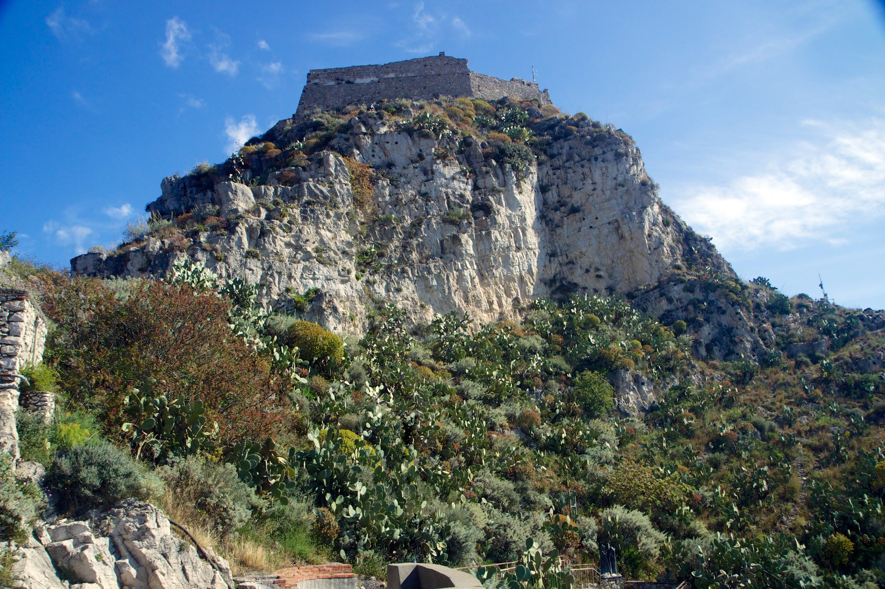

Mark Elster
Historic Reflections 7-1
The itinerary, day 7, part 1
The namesake Saracen castle at the summit was a closed archeological site at the time of our visit so we turned our attention back to the sanctuary that was, externally at least, nondescript. Inside the shrine is hewn from a natural rocky grotto making for an unusual juxtaposition of fine smoothly carved marble and craggy volcanic outcrops.


Naxos & Castellomo, Sicily

Dropping across a small saddle of connecting ridge, we rounded another tight turn into the main square—a space so authentically Sicilian in appearance that it strikes American eyes as a movie set, it's just too perfect. Costumed villagers, wearing exactly what you would picture Sicilian's wearing, languidly spill out of church onto the cobblestone square looking as if they are going to break into a Sicilian dance for the festival scheduled later in the day. Merchants and farmers peddle their wares at the margins as children scurry about. The sun sparkles on the sea below, the gentle breeze carrying the aroma wafting from an unseen kitchen. It is a moment we won't forget and that we would never have known to seek out, but for Nunzio.


Nunzio turns out to be an entertaining tour guide and storyteller—we learn a lot about the local history and economy, politics, site specific information, fascists, the mafioso, and recent events (more on that later) as he took us to each new vista. He stopped whenever and wherever we wanted and patiently waited for my prolific photos, frequently stepping in to do a decent job taking portraits of the four of us.
After several switchbacks no tour bus could negotiate (even scooters had to be cautious) we arrived at a little shrine and a ruined castle (one of two for which the town is named). It was then we could see evidence of the recent eruption Nunzio told us of—coarse black ash was deposited everywhere, most evident between the rough paving stones underfoot.
After several switchbacks no tour bus could negotiate (even scooters had to be cautious) we arrived at a little shrine and a ruined castle (one of two for which the town is named). It was then we could see evidence of the recent eruption Nunzio told us of—coarse black ash was deposited everywhere, most evident between the rough paving stones underfoot.

There isn't much to Castellomo but it is definitely worth the visit. Situated on the top of Mount Tauro, the Santuario Madonna della Rocca (Sanctuary of the Madonna of the Rock) shrine offers a sweeping panorama of Taormina on the narrow plateau directly below, the beautiful coastline below that, and of Mt. Etna beyond—simply breathtaking.
Descending precipitously off the edge of the cliff, a cobble–paved path called the Salita Castello plunges down to Taormina—three of us enthusiastically endorse trekking down it if we had more time, the fourth threatening mutiny if we dared (NancyEllen grew dizzy just looking at it).
Descending precipitously off the edge of the cliff, a cobble–paved path called the Salita Castello plunges down to Taormina—three of us enthusiastically endorse trekking down it if we had more time, the fourth threatening mutiny if we dared (NancyEllen grew dizzy just looking at it).

Exploring on foot for a prearranged thirty minutes, we struck off through town seeking out the Castello (also closed on Sunday) soaking in the flavor of the place along the way.


Foregoing the package excursions, we're dropped at the pier, left to improvise our own adventur beginning in truly ancient Giardini Naxos, inhabited by the Siculi even before the Greeks arrived on the Sicilian coast in 734 BC to colonize it. There we could have idled away a very pleasant day on the beach or sampling the picturesque shops and rustic eateries—but instead set our sights on the only slightly less ancient Taormina, about 4 miles north and east up a steep gradient.
Walking was out of the question, so we darted over to the taxis queued up awaiting their tourist cargo, and there met the enterprising Nunzio. After brief introductions he agreed to drive us into town but immediately pitched an optional package deal—that no doubt had served many others as well as it did for us—rather than just providing a lift into town, we could engage him for the day, starting with a quick driving tour of the environs, culminating at one end of the Corso Umberto, the main street of Taormina, where we would later rendezvous for our return trip. All for the reasonable negotiated sum of $125 US.* After a few tweaks to the itinerary we agreed to his terms, and set off along the beach and up the incline to Castelmola, the little village overlooking Taormina.
*Once again I'm struck by the contrast between this experience and the typical highly regulated (for your protection ;-) and inflexible taxi service in the US where our transaction would be illegal. We were so pleased with his service that he ended his day with a 40% tip.
Walking was out of the question, so we darted over to the taxis queued up awaiting their tourist cargo, and there met the enterprising Nunzio. After brief introductions he agreed to drive us into town but immediately pitched an optional package deal—that no doubt had served many others as well as it did for us—rather than just providing a lift into town, we could engage him for the day, starting with a quick driving tour of the environs, culminating at one end of the Corso Umberto, the main street of Taormina, where we would later rendezvous for our return trip. All for the reasonable negotiated sum of $125 US.* After a few tweaks to the itinerary we agreed to his terms, and set off along the beach and up the incline to Castelmola, the little village overlooking Taormina.
*Once again I'm struck by the contrast between this experience and the typical highly regulated (for your protection ;-) and inflexible taxi service in the US where our transaction would be illegal. We were so pleased with his service that he ended his day with a 40% tip.


Another peaceful moonlit night at sea transported us to Sicily gazing upon the flanks of Mt. Etna, the largest active volcano in Europe, at 10,922 feet (3,329 meters) and growing. Like most stratovolcanoes, it looms over its territory—it is simply immense at 86 miles (140km) in circumference—breathtaking in the chill morning light beneath a blanket of scudding clouds.
Departing too soon, we rejoin Nunzio for our ride down into Taormina, quickly absorbing his strategic suggestions to make best use of our remaining three and a half hours. He dropped us at the far west end of the Corso Umberto to start off the second half of our day.